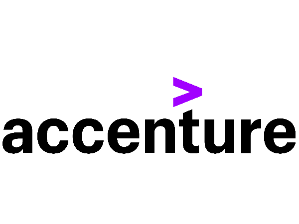

Technical expertise: 0 Projects
Education
Spring 2021 - Ongoing
Master’s Degree In Computer Science - 3.92 GPA
Georgia State UniversityCourse Work: Adv DB Systems, Data Visualization, Big Data Programming, Cryptography, Python Programming
2013-2017
Bachelor's Degree In Computer Science - 3.9 GPA
Jawaharlal Nehru Technological University, HyderabadExperience
Jan 2021 - Present
Graduate Research Member | Evidence-Based Cybersecurity Research Group
Georgia State University- Involved in collecting data from 60 underground online darknet sites (markets) and Telegram data (Groups and Channels) that facilitate illicit sales.
- Run queries using MySQL to retrieve relevant and most important data. Analyze it using Tableau to get information/insights on who is involved, how they operate, and test strategies for disrupting their activities.
- Write Scrapers and Parsers using Python to retrieve the data from darknet sites (markets and forums) and store it in the database.
- Scraping and Parsing data from darknet sites manually takes weeks which is reduced to 3-4 hours with the use of Scrapers and Parsers code and improved Data efficiency by 20% by generating Dashboards using Tableau and SQL.

Jul 2017 - Oct 2020
Data Analyst
Accenture, India- Worked on a Content Management Project for the Client Hess involved in the exploration and production of crude oil and natural gas. We had 3 applications that stored all the client’s oil and gas-related data like cheques, planning documents, SAP, and other financial documents.
- My role involved analyzing user requirements and developing tools accordingly which automates and reduces manual intervention.
- Developed the ‘Active User Report tool’ using Python and MySQL which provides active user’s information from the repository and helps to monitor the company’s product license. Analyzed and processed this data using Tableau by creating dashboards to visualize the data and accurately present the insights of customer data.
- Developed the ‘Bulk Documents Export tool’ using Python and MySQL which helped end-users to extract bulk documents from the repository by reducing the run time from 1 hour to 20 mins.
- Directly worked with clients and customers to resolve the tickets/issues logged by them in ServiceNow.
- Retrieved the above customer’s tickets data to perform analysis using Tableau by creating Dashboards to monitor and report the customer’s issues in order to automate the issues to reduce manual work and improved efficiency by 40%.

Jan 2017 - May 2017
Intern
Infosys, India- Worked on major project “Airbnb Data Analysis” to analyze the top 10 economically best and safe Airbnb stays and report price prediction using top-k and price prediction algorithms. Analyzed the result by creating charts and dashboards in Tableau.
- Tools Used: HDFS, Spark, MySQL, Tableau.
Skills
PROGRAMMING LANGUAGES:Database Technologies
Data Visualization Tools and libraries